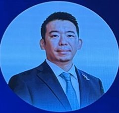

01講者 Snapshot

前田陽 Minami Maeda
樂天醫藥 Rakuten Medical 執行長 · 官網介紹
樂天醫藥執行長，帶領公司以「戰勝癌症」為使命，開發並商業化光免疫療法——結合藥物與醫療器材、在清除腫瘤的同時兼顧病人生活品質的新療法。 — TSIC 官網講者介紹
02講題背景
- 樂天醫藥開發光免疫療法：用抗體帶著光敏染料鎖定腫瘤細胞，再以紅光照射破壞癌細胞膜。
- 療法已在日本核准用於無法切除的頭頸癌，截至 2026 年 1 月在日本健保下提供超過 1,200 次治療。
- 全球三期試驗在美、日、台收案，目標 2028 年向美國 FDA 提出上市申請。
- 2026 年 1 月完成 1 億美元 F 輪，台杉投資參與；前田陽 7 月起升任執行長，加速美國商業化。
03Key Takeaways
1,200 次+日本健保下的治療次數，截至 2026/1/19
1 億美元2026 年 1 月 F 輪融資
2028 年目標向美國 FDA 提出上市申請
04公開背景資料
- 前田陽 2017 年加入樂天醫藥，2024 年 8 月任總裁；現任 Rakuten Medical, Inc. 執行長、日本法人代表董事暨副會長、台灣樂天醫藥董事長。早年任職麥肯錫東京與約翰尼斯堡辦公室，之後擔任日本厚生勞動大臣的首席幕僚，並曾任職首相官邸。東京大學公共政策碩士。 — 樂天醫藥官網｜領導團隊
- 公司 2026 年 6 月 9 日宣布人事調整：前田陽自 2026 年 7 月 1 日起由總裁升任執行長，原執行長三木谷浩史 Mickey Mikitani 改任董事會執行董事長；公司稱此舉是為加速推進美國商業化。 — Rakuten Medical 新聞稿
- 光免疫療法的原理：以抗體鎖定腫瘤細胞並攜帶光敏染料 IR700，以 690 nm 紅光照射活化後破壞癌細胞膜；報導指出這也可能釋放腫瘤抗原、活化免疫系統。 — GeneOnline 2025-08-12
- 在日本，Akalux ASP-1929 已核准用於無法切除的局部晚期或復發頭頸癌；截至 2026 年 1 月 19 日，已在日本國民健康保險下提供超過 1,200 次治療。日本以外仍屬試驗階段。 — Rakuten Medical 新聞稿 2026-01-20
- 全球三期試驗 ECLIPSE，ASP-1929 併用 pembrolizumab，用於局部區域復發頭頸部鱗狀細胞癌的一線治療，在美國、日本與台灣收案；報導稱目標 2027 年完成收案、2028 年底前向美國 FDA 提出生物製劑上市申請 BLA。台灣約有 10 個臨床中心收案，並與友華生技 Orient EuroPharma 合作台灣、新加坡、馬來西亞、菲律賓的商業化。 — GeneOnline 2025-08-12
- 前田陽在受訪時提到：任職厚生勞動省時，癌症治療成本每年上升 10–15%，但治療成果沒有跟著改善，2025 年報導中的說法，非本場演講。 — GeneOnline 2025-08-12